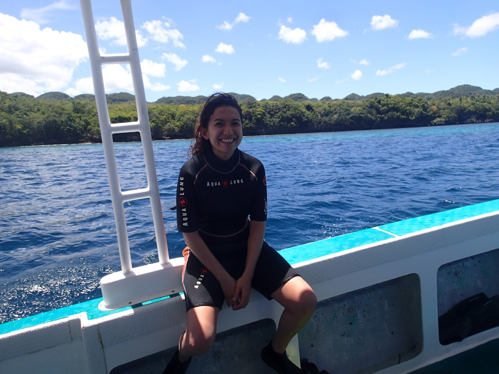

Hyacinth Suarez
Hyacinth Suarez is a Boholana* Marine Biologist. Growing up along the coast of Bohol, she has always been fascinated by the biodiversity of the marine environment. At present, she is a faculty member of the College of Arts and Sciences of Holy Name University (HNU) and manager of the HNU-Center for Marine Science Studies.
Hya obtained her Masters in Coastal Resource Management at Silliman University in Dumaguete City and a PhD degree in Biology (Marine Biology track) at the University of San Carlos in Cebu City, Central Philippines. Her primary research interest is mesophotic corals, specifically the black corals. She is part of a research project on Mesophotic Coral Ecosystems in selected areas of the Philippines. Funded by the Department of Science and Technology, this project is a collaborative effort between three Filipino universities: University of the Philippines — Diliman (through the Marine Science Institute), Mariano Marcos State University, and Holy Name University.
*Boholanos hail from Bohol Island in the Central Visayas region of the Philippines. The island province is known for its coral reefs and fascinating geological formations such as the Chocolate Hills.
What drew you to marine biology?
I was born in Mindanao, but my family returned to Bohol when I was about three, to a house barely ten meters from the beach. My mother still tells the story of the first time I saw the ocean — I ran straight to it and sat staring at the waves. We couldn't afford many toys, so the beach became my playground: rocks and shells were my toys, crabs and molluscs my playmates. I had no idea then how much that time would shape my career.
For a while I thought I'd become a musician — I'd taught myself piano and ukulele and competed at the district level — but a music career would have meant moving to Manila, which we couldn't afford. In my last year of high school, unsure what to do next, my mother handed me a pocket book about a marine biologist and everything clicked into place. My grandmother, who pushed every child and grandchild in our family to finish school despite real poverty, was a huge part of why I believed I could pursue it. After my undergraduate degree, I did fieldwork with fishing communities for a Master's in Coastal Resource Management — until an old fisherman asked me how anyone could plan for a better tomorrow when they weren't sure they'd survive today. It made me realize how disconnected top-down conservation policy could be from the people it affected, and it's stayed with me ever since. I moved into teaching at Holy Name University (HNU) instead, where I met my now-husband Mel, a physicist who encouraged me to pursue a PhD while I kept teaching. A chance conversation with a Peace Corps diving instructor in Jagna, Bohol in 2012 pointed me toward black corals, and I never looked back.
Your research on black corals
Black corals get their name from their organic, jet-black skeleton — unlike the calcium-carbonate skeletons of reef-building stony corals — which can be bent and molded without breaking, making it prized for jewelry. That same property has made illegal harvesting a real problem, so the corals are now strictly protected by law; it took me almost a year just to get fieldwork permits for my dissertation. Studying them meant diving at low-light depths and examining their skeletal structure under a scanning electron microscope, since the classification of black coral species is still being revised as DNA sequencing techniques improve.
After finishing my PhD, I felt burnt out juggling teaching with fieldwork between Tagbilaran and Cebu, so in 2019 I took on a new role helping HNU develop a marine science research site in Anda, Bohol. That eventually connected me to a DOST-funded collaboration between the University of the Philippines Diliman's Marine Science Institute, Mariano Marcos State University, and HNU studying the biodiversity of mesophotic coral ecosystems — the "twilight zone" between 30 and 150 meters, where black corals live alongside sponges and algae in low-light conditions. We began fieldwork in November 2022, and I now manage HNU's Marine Science Center at Anda while continuing to teach. Long term, I'd like to see the Center become a leader in marine science research and help connect that science to marine and climate policy.